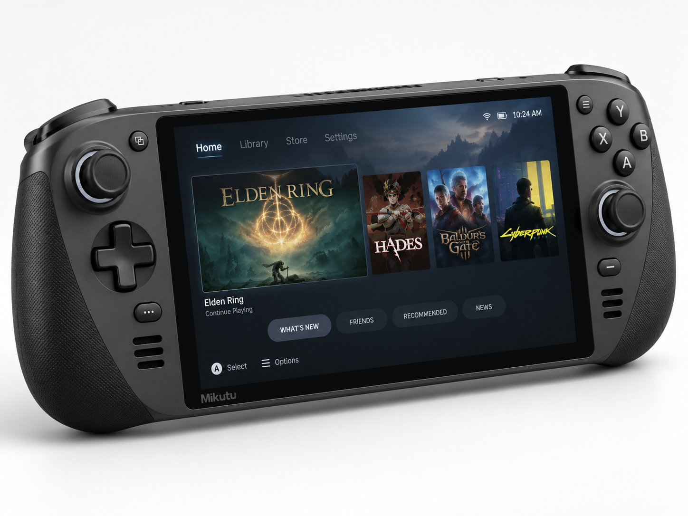

Mikutu
Mikutu — портативная игровая консоль одноимённой компании, серийно выпускаемая с 2024 года. Проект вырос из неудавшейся попытки компании выйти на рынок смартфонов и после анонса Steam Deck был полностью переориентирован на портативные игровые устройства. Ключевой особенностью системы стал видеопроцессор FIPS GM-H35, разработанный компанией FIPS специально для проекта Mikutu, а также собственная операционная система на базе Linux со встроенным Steam.
Компания Mikutu была зарегистрирована в Мальте в 2020 году предпринимателем Шеротом Фаши. Первоначально она планировала выпускать бытовую электронику и смартфоны, однако уже в 2021 году отказалась от телефонного направления и сосредоточилась на разработке игровой системы. В январе 2024 года серийная версия была представлена на официальном сайте и YouTube, а с февраля начались массовые продажи сначала на ближайших рынках, а затем в США и других регионах.
История
2020: основание компании и телефонный проект
В 2020 году Шерот Фаши после закрытия очередного местного производителя электроники решил создать собственную компанию. Mikutu зарегистрировали в Мальте как начинающего производителя техники. Компания получила государственное финансирование для нового бизнеса, приобрела помещение под производство и закупила китайское промышленное оборудование.
К концу года была собрана первоначальная команда и началось проектирование собственного смартфона. Компания пыталась сделать устройство максимально самостоятельным, хотя ранние решения и организация производства во многом напоминали китайские недорогие проекты.
2021: первый смартфонный прототип и переход к игровой консоли
В первой половине 2021 года Mikutu собрала первый работающий прототип телефона. Устройство уже включалось, а команда начала адаптацию Android-оболочки для будущей серийной версии. Однако проект не был доведён до коммерческого выпуска.
После анонса Steam Deck руководство Mikutu пересмотрело стратегию. Компания опасалась повторить путь небольших производителей смартфонов, которые выходили на перенасыщенный рынок, несколько лет пытались удержаться на нём и затем прекращали работу. Телефонный прототип отложили, а основным направлением стала портативная игровая система, задуманная как прямой конкурент Steam Deck.
Для нового устройства требовалось более подходящее игровое графическое решение. Mikutu первоначально обратилась к MIKOJI, владельцу производителя процессоров Yoa, с предложением вновь создать процессор со встроенной игровой графикой. Yoa отказалась, объяснив, что больше не занимается этим направлением.
После отказа Yoa компания нашла другого партнёра — FIPS, молодого производителя графических процессоров, который за пределами Кивиша был известен прежде всего в России и Китае и имел репутацию поставщика простых офисных решений. Mikutu предложила FIPS разработать специализированный видеопроцессор, способный обеспечить производительность класса Steam Deck, гарантируя закупку партий в случае успеха. Для обеих компаний проект стал попыткой выйти из прежней рыночной ниши: Mikutu требовалось доказать, что она способна создать реальное игровое устройство, а FIPS — выйти из сегмента офисных графических решений на игровой рынок.
2022: разработка FIPS и корпусные прототипы
В 2022 году FIPS временно сократила часть обычного производства и сосредоточила ресурсы на видеопроцессоре для Mikutu. Проект получил конкретную задачу: создать компактный игровой чип, пригодный для портативной системы и запуска полноценных современных игр.
Mikutu параллельно использовала наработки незавершённого телефона. Телефонную плату временно устанавливали в экспериментальные корпуса консоли и загружали на неё различные тестовые системы. Такая конфигурация не предназначалась для оценки будущей игровой производительности: она использовалась для проверки экранов, органов управления, компоновки и формы корпуса.
Команда перебирала варианты размеров и хвата, стремясь сначала определить удобную форму устройства, а затем подгонять окончательную электронику под корпус. Отдельно проверялось расположение стиков, кнопок, системы управления и будущего охлаждения.
2023: FIPS GM-H35 и первый полноценный прототип
В 2023 году FIPS представила FIPS GM-H35 — специализированный игровой видеопроцессор для Mikutu. Для FIPS это стало резким технологическим скачком: компания, чьи прежние решения использовались преимущественно в простых офисных системах и лёгких графических задачах, за короткий срок получила продукт, который по производительности вплотную приблизился к графическому уровню Steam Deck.
После получения GM-H35 Mikutu перешла от корпусных макетов к полноценному аппаратному проектированию. По измерениям компании, тепловыделение нового решения было немного ниже, чем у Steam Deck, поэтому система охлаждения сопоставимого класса давала достаточный температурный запас на штатных настройках.
В течение следующих месяцев был собран первый полноценный прототип. Корпуса, экраны, кнопки, контроллеры, стики и часть других компонентов закупались у китайских производителей. Одновременно началась разработка собственной операционной системы на базе Linux.
В том же году на рынке появилась домашняя консоль Sepo компании Taseko. Её подход заметно отличался от Mikutu: Sepo выросла из переработанной архитектуры игрового ноутбука и использовала готовые процессорные и мобильные графические компоненты, тогда как Mikutu строилась как специализированная портативная система вокруг решения FIPS.
2024: презентация, Steam и массовый выпуск

2 января 2024 года серийная Mikutu была официально представлена на сайте компании и на YouTube. Цены различались в зависимости от региона; для американского рынка версия с накопителем 512 ГБ была заявлена примерно за 389 долларов.
К моменту презентации собственная Linux-based система продолжала дорабатываться. Компания первоначально рассчитывала сильнее отделить платформу от Steam Deck, однако отсутствие собственной библиотеки стало главным коммерческим ограничением. Крупные издатели не были готовы массово переносить игры на новую и ещё не проверенную платформу, поэтому в систему встроили Steam как основной источник существующей игровой библиотеки.
Таким образом Mikutu стала одновременно аппаратным конкурентом Steam Deck и устройством, зависящим от экосистемы Steam для значительной части каталога. Это позволило владельцам использовать уже приобретённые PC-игры и уменьшило необходимость в отдельных версиях для новой платформы.
В феврале 2024 года после подготовки массовой производственной версии начались реальные поставки. Сначала консоль появилась на ближайших рынках — в Китае, России, Южной Корее, ККП и Японии. Затем небольшие партии отправили в США и более дальние регионы, чтобы оценить спрос.
После того как ранние партии показали устойчивые продажи, завод Mikutu перешёл на максимально возможную загрузку. Компания выбрала простую стратегию: быстро наращивать производство при существующем спросе, одновременно стабилизируя операционную систему обновлениями. В России, странах СНГ, включая Украину, и ряде других рынков Mikutu активно продавалась как более дешёвая альтернатива Steam Deck для пользователей, которым была нужна близкая по классу портативная игровая система, но которые не хотели платить более высокую цену.
К концу года система уже не воспринималась только как ограниченный технологический эксперимент. Рост производства и международных поставок одновременно сделал Mikutu главным массовым игровым устройством на видеопроцессоре FIPS и стал для самого производителя крупной демонстрацией перехода от офисных решений к игровой индустрии.
2025: стабилизация платформы и переговоры о PttF:A
В 2025 году Mikutu не получила крупного аппаратного обновления и не делала громких релизов. Компания продолжала выпуск уже существующей модели, расширяла поставки и постепенно улучшала программное обеспечение, драйверы и совместимость.
Переломным событием стал выход Path to the Finish: Asia (PttF:A) как крупного эксклюзива экосистемы Sepo. Для Mikutu это показало слабость прежней стратегии: цена, Steam и хорошее железо делали устройство привлекательным, но не создавали отдельной причины перейти именно на эту платформу.
Mikutu начала переговоры с производителем Sepo о расширении эксклюзивности PttF:A. Основным аргументом был портативный сценарий: игра могла оставаться частью экосистемы Sepo, но владельцы Mikutu получили бы возможность играть в неё не только дома на отдельной телевизионной системе, но и в дороге.
2026: PttF:A и Sepo Launcher
В 2026 году соглашение было заключено. Path to the Finish: Asia стала доступна на Mikutu при условии, что игра сохранит статус эксклюзива программной экосистемы Sepo. Версия для Mikutu не распространялась через Steam.
Пользователь устанавливал отдельный установщик, который добавлял на систему Sepo Launcher; уже через него загружалась сама игра. Таким образом PttF:A перестала быть строго аппаратным эксклюзивом одной домашней консоли, но не превратилась в обычный мультиплатформенный релиз.
Для Mikutu сделка стала первым заметным примером контента, способного привлекать покупателей не только ценой устройства и доступом к Steam. Платформа получила крупную игру, официально недоступную на Steam Deck через Steam, а Sepo одновременно расширила собственную программную экосистему на портативное устройство.
Аппаратная архитектура
Mikutu проектировалась как специализированная портативная игровая система, а не как переделанный ноутбук или смартфон. Ранние корпусные прототипы временно использовали электронную начинку незавершённого телефонного проекта, однако эта схема служила только испытательным стендом для формы, экрана и управления.
Основой полноценной игровой версии стал видеопроцессор FIPS GM-H35, разработанный компанией FIPS специально по заказу Mikutu. Чип создавался с расчётом на производительность, близкую к Steam Deck, при несколько более низком тепловыделении. Это позволило использовать систему охлаждения сопоставимого класса без необходимости увеличивать корпус только ради отвода тепла.
Значительная часть внешних компонентов — корпуса, экраны, кнопки, стики и элементы управления — поставлялась китайскими производителями. После первых успешных продаж эти закупки были переведены из прототипных объёмов в массовые производственные партии.
Операционная система и игры
Для Mikutu разработана собственная операционная система на базе Linux. Изначально компания стремилась создать более самостоятельную игровую платформу, однако на раннем этапе у неё не было собственной библиотеки, достаточной для массового запуска.
Поэтому Steam был встроен как основной канал доступа к PC-играм. Такое решение позволило использовать уже существующую библиотеку пользователей и снизило зависимость от специальных портов, но одновременно сделало Mikutu аппаратным конкурентом Steam Deck внутри той же крупной цифровой экосистемы.
С 2026 года на системе также работает Sepo Launcher. Первым крупным релизом через него стала Path to the Finish: Asia, которая не распространялась на Mikutu через Steam и сохраняла принадлежность к программной экосистеме Sepo.
Производство и рынки
Серийные продажи начались в феврале 2024 года. Первоначальная стратегия заключалась в последовательном расширении: сначала ближайшие рынки Восточной Азии и Евразии, затем небольшие партии в США и другие удалённые регионы. После подтверждения высокого спроса производство было быстро увеличено.
Особенно заметную роль в позиционировании сыграла цена версии 512 ГБ — около 389 долларов на американском рынке. В России, странах СНГ и ряде других регионов Mikutu активно продвигалась как доступная альтернатива Steam Deck при близком классе производительности.
Компания не стала останавливать продажи до полной программной полировки устройства. Вместо этого система стабилизировалась параллельно с массовым производством: обновлялись драйверы, исправлялись ошибки Linux-based интерфейса и улучшалась совместимость игр.
Связь с FIPS
Партнёрство с FIPS стало определяющим для проекта. Для Mikutu оно позволило перейти от концепта портативной системы к собственному игровому железу. Для FIPS заказ стал первым крупным шагом от дешёвых офисных графических решений к специализированным игровым видеопроцессорам.
Успех GM-H35 и массовые продажи Mikutu сделали консоль фактически демонстрационной платформой технологий FIPS. В последующие годы FIPS продолжила развитие игровых графических решений и закрепилась как самостоятельный участник аппаратной части игровой индустрии.
Связь с Sepo
Mikutu и Sepo создавались почти одновременно, но по разным принципам. Sepo стала домашней телевизионной системой на переработанной ноутбучной архитектуре, тогда как Mikutu строилась как портативная специализированная платформа. Обе системы использовали Linux и Steam, однако развивались как отдельные продукты разных производителей.
Сделка по PttF:A в 2026 году впервые связала две системы общей программной экосистемой. Sepo сохранила эксклюзивность игры на уровне своего магазина и launcher, а Mikutu стала портативным устройством, на котором этот эксклюзив мог официально работать.